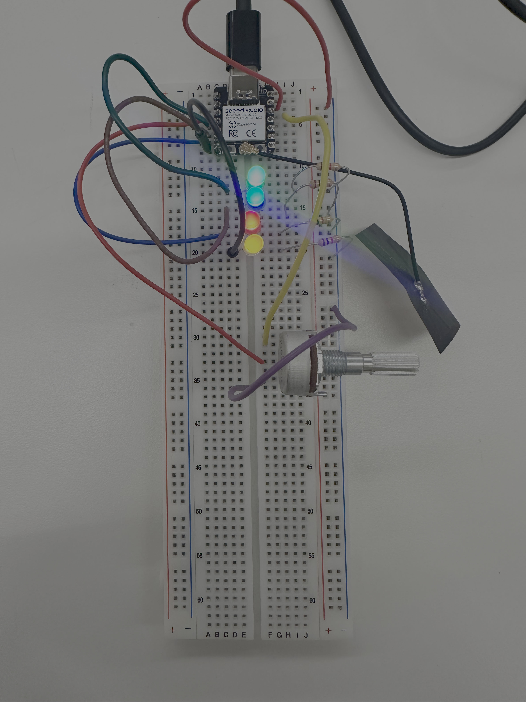

// My LED Potentiometer Code for XIAO ESP32C3
int leds[] = {D3, D4, D5, D6};
//int leds[] = {6, 5, 4, 3}; // use this to make the lights go backwards
int numleds = sizeof(leds) / sizeof(leds[0]);; // because .length isn't here :(
void setup() {
Serial.begin(115200);
// set LED pins to output and off
for (int i = 0; i < numleds; i++) {
pinMode(leds[i], OUTPUT);
digitalWrite(leds[i], LOW);
}
pinMode(A0, OUTPUT); //This will be GND for the potentiometer
pinMode(D4, OUTPUT); //This will be 3.3V for the pot
pinMode(A2, INPUT);
digitalWrite(A0, LOW);
digitalWrite(D4, HIGH);
}
void loop() {
// check the potentiometer value
int pot_value = analogRead(A2);
Serial.println(pot_value);
// map it to useful values representing the # of leds on
// since map() truncates, use numleds+1 instead of numleds
int led_value = map(pot_value, 0, 4095, 0, numleds+1);
// for each led in leds[]
for (int l = 0; l < numleds; l++) {
// if it should be on, turn it on
if (l < led_value) {
digitalWrite(leds[l], HIGH);
// otherwise turn it off
} else {
digitalWrite(leds[l], LOW);
}
}
// this feels like an appropriately speedy response time
delay(100);
}
Copy Code